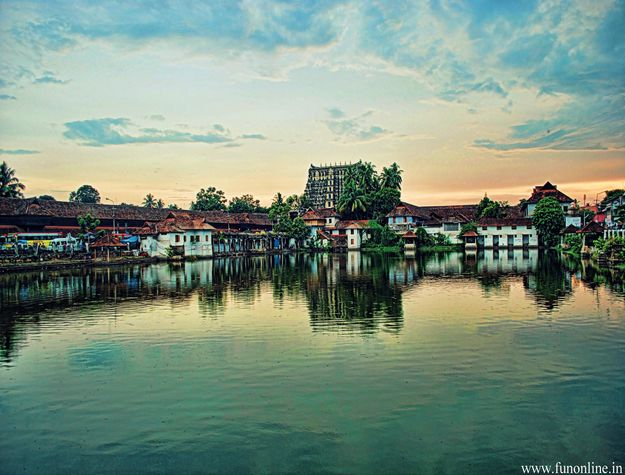

Thiruvananthapuram
Thiruvananthapuram is the capital city of the Indian state of Kerala. The city known by Trivandrum.
Know More >>Kollam
Kollam district (formerly Quilon) is one of fourteen districts of the state of Kerala, India.
Know More >>
Alappuzha
Alappuzha, is the administrative headquarters of Alappuzha District in the Indian State of Kerala.
Know More >>Pathanamthitta
Pathanamthitta is a municipality situated in the Central Travancore region in the state of Kerala, India.
Know More >>Kottayam
Kottayam is a city in the Indian state of Kerala. Kottayam literally means the interior of a fort Kotta + Akam.
Know More >>